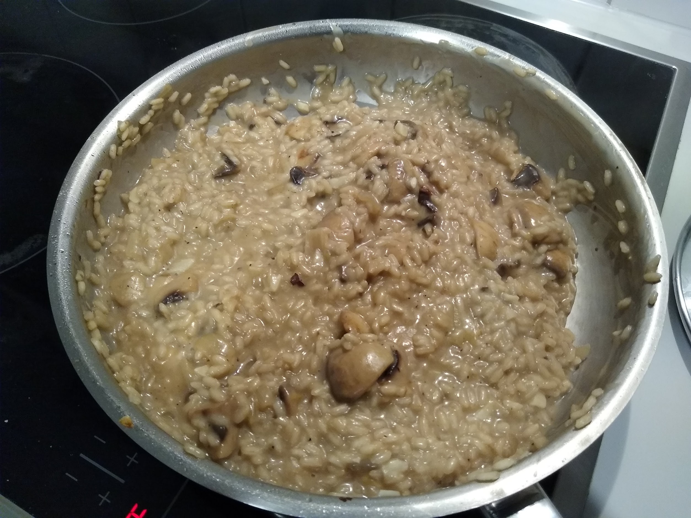

Mushroom Risotto

Ingredients
| Mushrooms |
350 gr |
| Onion |
1 piece |
| Garlic |
3 cloves |
| Risotto rice |
1 cup |
| Parmesan |
100 gr |
Instructions
- Chop the ingredients.
- Add 1/4 of mushrooms and onions and 1 garlic clove to a pot, add water and boil to get stock.
- In a pan: Fry onion, wait, add garlic, add mushrooms.
- Add the rice to the pan and slowly add the stock.
- When the consistency of the rice is good enough, add the parmesan, mix. Remove from heat and let it rest.